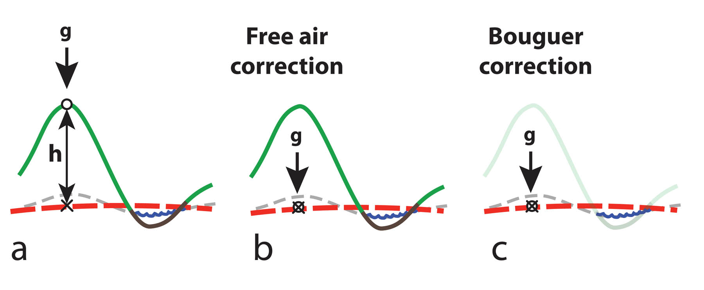
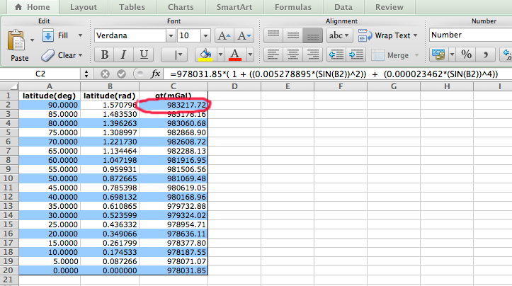
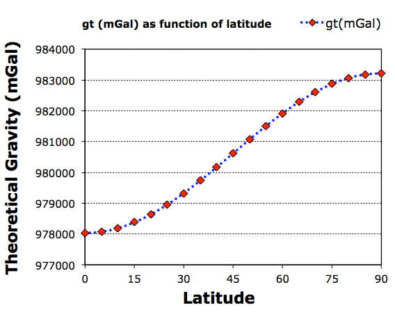
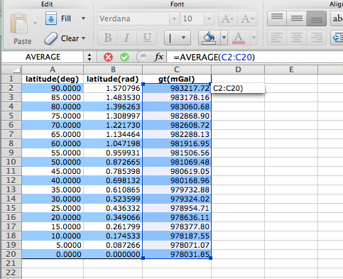
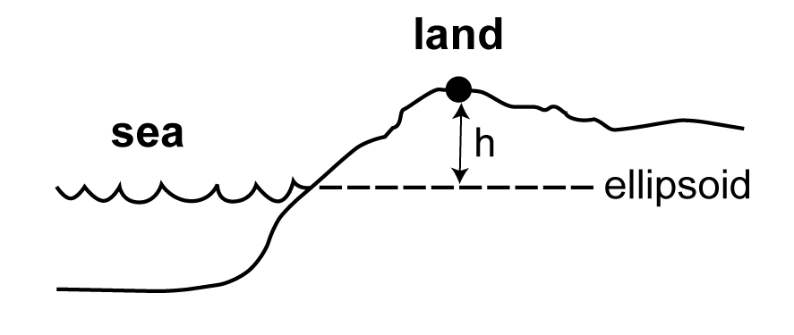
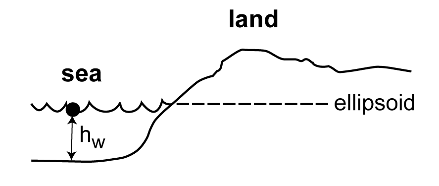

Click the menu above to navigate to resources for each Lab session. You will be able to download (click the appropriate icons on the top right) a pdf of the Lab notes and any Excel spreadsheet templates and/or solutions for each of the Lab sessions.
Please also read the relevant sections from the recommended reading as well as using these help pages for each Lab session.
 |
|
| Lab notes |
Answer template |
Lab 1
Gravity Measurements: Making Corrections and Calculating Anomalies

This laboratory session has two main objectives. The first is to become familiar, if not expert, with using Excel to perform calculations using formulae and to plot the results using simple x-y graphs. The second objective is to become familiar with, and to be able to apply, the formulae used to correct field based gravity measurements.
If you have never used Excel before, or need to brush up on formula syntax and graph plotting tricks, you might benefit from reviewing some of the online training video tutorials.
There are three key formulae;
- The Theoretical Gravity Formula (there are several, but we will use a well established one given in Nagy, 1978) to calculate the theoretical "standard" gravity value for the station latitude.
Nagy, D., 1978, Direct gravity formula for the Geodetic Reference System 1967, Bulletin of Geodesy, v52, p159-164. (download link)
- The Free Air Correction-to adjust for height above the reference ellipsoid (spheroid really, as the Earth model is the 3D shape produced by rotation of the 2D ellipsoid).
- The Bouguer Correction-to adjust for the mass of rock forming the topography (for land based stations) and/or the difference in mass between sea water and rock (for ocean stations).
Task 1
Calculate the theroretical gravity value (in mGal) using the 1967 Theoretical Gravity Formula for a series of points on Earth, 5 degrees of latitude apart, from the equator to the north pole (so every 5 degrees from 0 degrees latitude North to 90 degrees latitude North).
The key to this task is understanding how to enter a formula to calculate a value by refering to other values stored within the cells of one column and to store the result in an adjacent column. If you are unfamiliar with how to do this in Excel, this is a very helpful tutorial to refer to: Overview of formulas.
The YouTube video below demonstrates how to set up your intial column of latitudes and apply a function called RADIANS() to convert the latitude values in column A (entered in degrees) to radians in column B.
There is a strict syntax that needs to be used when entering formulae, and you should use brackets frequently to make sure that the formula entered is evaluated as you want it to be. The correct syntax for entering the 1967 Theoretical Gravity Formula is shown below;
= 978031.85 * (1 + ((0.005278895 * (SIN(B2))^2)) + (0.000023462 * (SIN(B2))^4))
In this formula SIN calls the trigonometric Sine function, and in this case it returns the Sine of the value stored in cell B2. So the B2 here is the cell reference, not a value itself, and in this case will refer to the latitude (in radians) of the station for which you wish to calculate the theroretical "standard" gravity for.
You can embed the RADIANS function within the formula to convert your latitude values, which are stored in column A, to radians directly, as shown below;
= 978031.85 * (1 + ((0.005278895 * (SIN(RADIANS(A2)))^2)) + (0.000023462 * (SIN(RADIANS(A2)))^4))
In the example layout shown below the latitude values (in degrees) are stored in column A, and have been converted to radians in column B using the RADIANS function, e.g. =RADIANS(A2). The theoretical gravity formula is then used to calculate the theoretical gravity value, gt, for each latitude using the appropriate formula. In the example below the formula is applied to cell C2 (red circle) of column C and refers to the latitude values in radians stored in column B.

Task 2
Plot a a simple x-y scatter graph using Excel which illustrates how the theoretical gravity values calculated in Task 1 vary with latitude, i.e. plot gt on the y-axis and values for latitude (degrees) on the x-axis.
Excel can be used to plot a bewildering array of graphs, or charts as they are refered to in Excel. In this laboratory we want to plot a simple x-y graph with the latitude values (in degrees) on the x-axis and the calculated theoretical gravity value on the y-axis. This is best done using the x-y Scatter plot option/style of chart.
If you are unfamiliar with plotting graphs using Excel a useful online tutorial and reference is: Create a chart from start to finish.
The YouTube video below demonstrates how to plot a simple x-y scatter plot using Excel;

Task 3
Calculate (using the Excel AVERAGE function) an average theoretical gravity value for the Earth (the average of the gt values from Task 1) and the difference in gravity (in mGal) between the poles and the equator.
Built in functions in Excel can be used to calculate most standard statistics (and many other useful things). To calculate the average of a range of values stored in a single column in Excel you can use the AVERAGE function. e.g.;
=AVERAGE(C2:C20)
In this example the average of all the values in Column C, from Row 2 to Row 20, will be calculated, so C2:C20 means, "from Cell C2 to Cell C20".

The difference in gravity between the poles and the equator can be calculated by inserting a simple formula into a blank cell e.g.;
=C2-C20 i.e. the difference between value in Cell C2 (g at pole) and the value in Cell C20 (g at equator)
Task 4
Show that an approximate value for dg/dR (the rate of change of gravity with increasing distance from the centre of mass of the Earth) is about -0.308 mGal/metre. Use the average gravity value you determined in Task 3, a sensible mean radius for Earth, R, and the formula (from page 227 of notes);
dg/dR = -2g/R
Note that the rate of change of gravity with increasing distance is negative (i.e. the further away from the centre of mass of the Earth you are the smaller g is going to be).
So, for example, if your average value of g was calculated and stored in Cell C25 of column C, and a value for R was in Cell C26, then the formula above could be typed (into an empty cell) as;
=-2*C25/C26 (take care to use values reflecting appropriate units, mGal for g and metres for R)
Task 5
A gravity measurement was performed on land at the following field site;

Terrain is undulating, low relief.
Latitude: 48.1195 N Longitude: 3.5678 W
Elevation (ellipsoid height), h, 487.9 m
Observed gravity (go) is 980717.39 mGal
1. Calculate the Free Air correction, FAC
2. Calculate the Bouguer correction, BC
3. Calculate the Free Air anomaly, gFA
4. Calculate the Bouguer anomaly, gBA
On land, the formula for the Bouguer Correction is;
BC = 2*Π*G*rhoc*h
where rhoc is Bouguer crustal density, 2670 kg.m-3 and h is height above the ellipsoid surface.
G is the gravitational constant, 6.67 x 10-11 N.m2.kg-2
Task 6
If the gravity station was at sea level (i.e. part of a marine gravity survey), and the depth of water, hw, beneath the site was 487.9 m, then assuming all other parameters are the same as in Task 5;

1. Calculate the Free Air correction, FAC
2. Calculate the Bouguer correction, BC
3. Calculate the Free Air anomaly, gFA
4. Calculate the Bouguer anomaly, gBA
At Sea, the formula for the Bouguer Correction is;
BC = 2*Π*G*(rhow-rhoc)*hw
where rhow is sea water density, 1030 kg.m-3; rhoc is Bouguer crustal density, 2670 kg.m-3 and hw is depth of water.
G is the gravitational constant, 6.67 x 10-11 N.m2.kg-2
Remember that the purpose of the Bouguer Correction is to account for the mass of any topographic deviations above or below our reference ellipsoid. On land topography is above the ellipsoid (apart from (quite?) a few areas on Earth that are below sea level, but dry), and so the BC is a positive value that is subtracted, i.e. we subtract some amount from the measured and corrected Free Air anomaly. At sea the situation is different of course, because a) we are AT SEA LEVEL (assuming the boat is floating), and b) there is water between us and our gravimeter (in the boat) and the sea bed. So at sea the BC corrects for the missing rock, by effectively displacing the water and filling the gap with rock with a mean density of 2670 kg.m-3 (the standard Bouguer crustal density).
So at sea the BC value is a negative value (see formula), BUT WE STILL SUBTRACT IT from the Free Air anomaly following the standard equation/formula, but subtracting a negative number adds a component of gravity to the final Bouguer Anomaly.